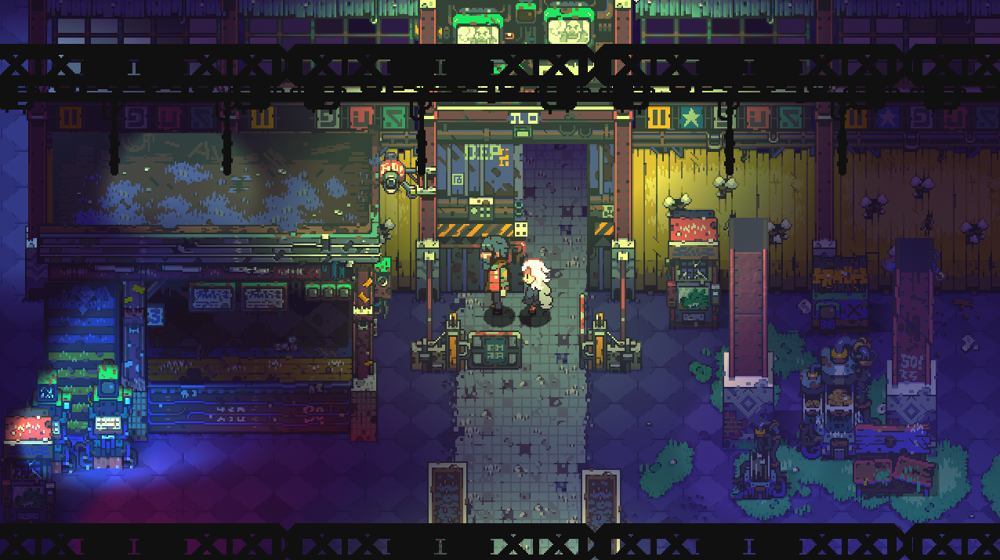
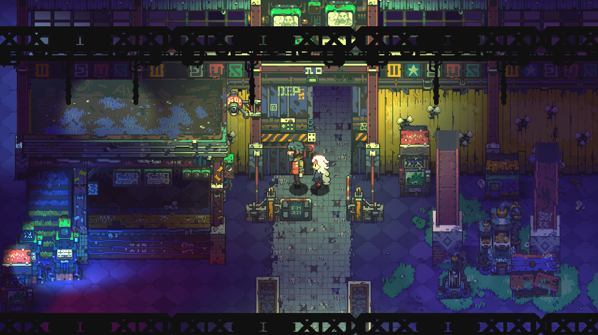

Kompendium
Kompendium grafiki komputerowej to zbiór wiedzy o technikach i narzędziach grafiki cyfrowej, obejmujący m.in. grafikę rastrową, wektorową, 3D i animację. Pomaga zarówno początkującym, jak i profesjonalistom.
Kompendium grafiki komputerowej to zbiór wiedzy o technikach i narzędziach grafiki cyfrowej, obejmujący m.in. grafikę rastrową, wektorową, 3D i animację. Pomaga zarówno początkującym, jak i profesjonalistom.
 


1. Budowa:
- Obraz składa się z siatki pikseli (najmniejszych jednostek obrazu).
- Każdy piksel ma określony kolor.
2. Cechy:
- Zależna od rozdzielczości – przy powiększaniu może tracić jakość (pikselizacja).
- Używana do zdjęć i realistycznych obrazów.
3. Format plików:
- JPEG, PNG, BMP, GIF, TIFF.
4. Narzędzia:
- Photoshop, GIMP, Paint.NET.
5. Przykłady zastosowań:
- Fotografia cyfrowa, grafika internetowa, edycja zdjęć.
1. Budowa:
- Obraz tworzony z figur geometrycznych (linie, krzywe, wielokąty).
- Opiera się na matematycznych wzorach, a nie na pikselach.
2. Cechy:
- Niezależna od rozdzielczości – można powiększać bez utraty jakości.
- Lekki rozmiar plików, łatwa edycja elementów.
3. Format plików:
- SVG, EPS, PDF, AI (Adobe Illustrator).
4. Narzędzia:
- Adobe Illustrator, CorelDRAW, Inkscape.
5. Przykłady zastosowań:
- Logo, ikony, ilustracje, typografia.
1. Budowa:
- Modele 3D składają się z siatek (mesh) złożonych z wierzchołków, krawędzi i ścian (poligonów).
- Używa tekstur, materiałów, światła i cieni.
2. Proces tworzenia:
- Modelowanie – tworzenie obiektów.
- Teksturowanie – nadawanie koloru, materiałów.
- Rigging i animacja – dodawanie kości i ruchów.
- Renderowanie – przekształcanie sceny 3D w obraz 2D.
3. Format plików:
- OBJ, FBX, STL, GLTF.
4. Narzędzia:
- Blender, Maya, 3ds Max, Cinema 4D, Unity/Unreal Engine (do gier).
5. Przykłady zastosowań:
- Filmy animowane, gry komputerowe, wizualizacje architektoniczne, druk 3D.
- Składa się z pikseli.
- Rozdzielczość = szerokość × wysokość (w pikselach).
- Typowe rozdzielczości:
- Ikony: 16×16, 32×32, 64×64 px
- Internet: 1280×720, 1920×1080 px (72 DPI)
- Druk A4: 2480×3508 px (300 DPI)
- Fotografia 4K: 3840×2160 px
- Większa rozdzielczość = większy plik i lepsza jakość.
- Składa się z figur geometrycznych.
- Niezależna od rozdzielczości – skalowalna bez utraty jakości.
- Rozdzielczość ustala się dopiero przy eksporcie:
- Internet: 72 DPI
- Druk: 300 DPI
- Banery/wielki format: 150–300 DPI
- Tworzy się modele 3D, które są renderowane do 2D.
- Rozdzielczość dotyczy gotowego renderu lub animacji.
- Typowe rozdzielczości renderów:
- Podgląd: 1280×720 px
- Internet/wideo: 1920×1080 px (Full HD)
- Film/TV: 3840×2160 px (4K)
- VR/gaming: zmienne, zależne od sprzętu (np. 2560×1440, 4K itp.)
- Model RGB – używany w ekranach (Red, Green, Blue).
- Model CMYK – używany w druku (Cyan, Magenta, Yellow, Black).
- Model HSL/HSV – bardziej intuicyjny do manipulacji (Hue, Saturation, Lightness/Value).
- HEX – zapis koloru w postaci #FF5733 (popularny w webdesignie).
- Używasz pełnych zakresów kolorów RGB (24-bit) – ponad 16 milionów kolorów.
- Indeksowane palety – używane np. w GIF-ach (do 256 kolorów).
- Można stosować gotowe palety (np. pastelowe, neonowe) albo tworzyć własne.
- Programy: Photoshop, GIMP mają biblioteki kolorów (Pantone, websafe itp.).
- Palety są zwykle spójne i ograniczone – np. flat design używa 4–6 kolorów.
- Popularne style:
- Flat Colors – proste, nasycone barwy (np. #F94144, #F9C74F)
- Duotone – dwie dominujące barwy
- Monochromatic – odcienie jednego koloru
- Programy typu Illustrator czy Inkscape pozwalają zapisywać i importować własne palety.
- Kolory zależą głównie od tekstur i materiałów, a nie od prostej palety.
- Kolory są kontrolowane przez:
- Shader'y – decydują o tym, jak światło reaguje z powierzchnią.
- Tekstury bitmapowe – mogą zawierać setki kolorów.
- Lighting – kolor końcowy zależy też od oświetlenia.
- Stylizowane gry mogą używać ograniczonej palety (cel shading, pixel art 3D).
- ✅ Ma bezpośredni wpływ na jakość obrazu.
- Głębia kolorów oznacza ile kolorów może mieć każdy piksel.
- Najczęstsze głębie:
- 1-bit – czarno-białe (np. skan dokumentu).
- 8-bit – 256 kolorów (np. GIF).
- 24-bit (True Color) – 16,7 mln kolorów (standard w JPG, PNG).
- 32-bit – 16,7 mln kolorów + przezroczystość (PNG z kanałem alfa).
- 48-bit / 64-bit – profesjonalne zdjęcia, formaty RAW.